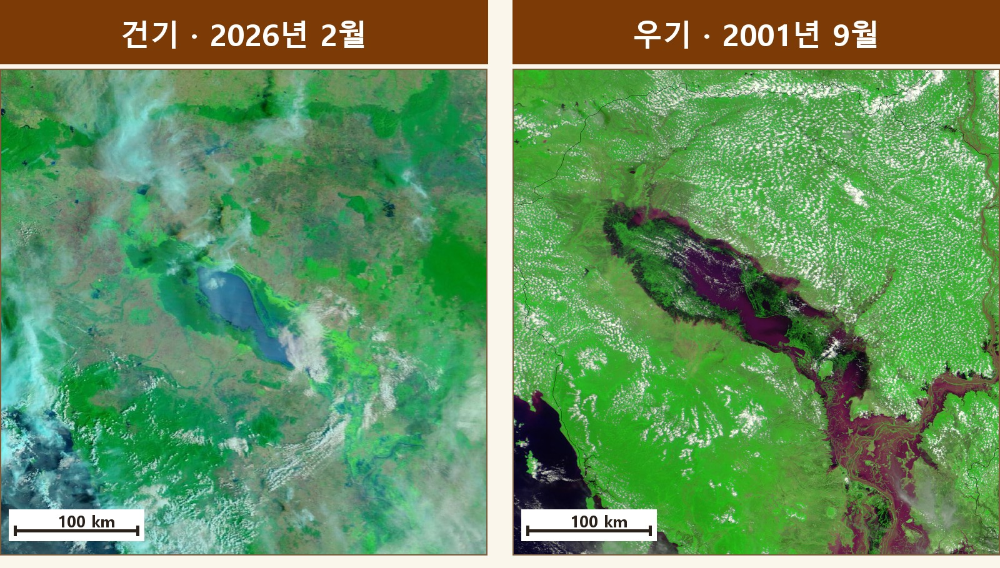
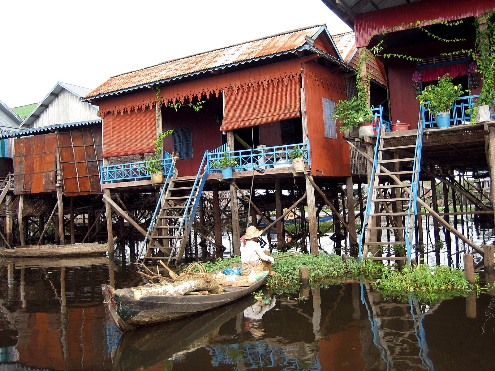
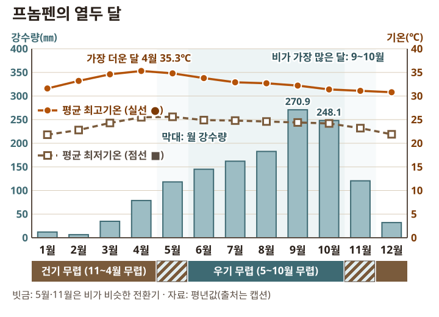

Day 81년에 두 번 방향을 바꾸는 강 — 메콩, 톤레삽, 그리고 우기와 건기
오늘의 질문: 강물이 거꾸로 흐르는 나라에서 사람들의 1년은 어떻게 움직이고, 우리가 갈 때 프놈펜 날씨는 어떨까요?읽는 시간 약 10분·땅과 자연
- 우기 몇 달(대체로 3~5개월) 동안은 메콩강 수위가 호수보다 높아져서, 톤레삽 강물이 호수 쪽으로 거꾸로 흘러요.
- 호수는 건기에 수심 1m 안팎에서 우기에 9m 넘게 깊어지고, 호숫가 사람들은 이 리듬에 맞춰 집을 높이 올리고 배로 오가요.
- 프놈펜의 우기는 5월 무렵~10월 무렵, 건기는 11월 무렵~4월 무렵이에요 추정. 가장 더운 달은 4월, 비가 가장 많은 달은 9~10월이에요 논쟁 있음.
표시가 없는 숫자는 확인된 값이에요. 자료마다 다르거나 어림한 값에만 추정·논쟁 있음을 붙였어요.
어제 퀴즈 정답 1번 X · 2번 ③ · 3번은 단톡방에서 이야기해요
카드로 보기
카드를 누르면 크게 볼 수 있어요.


8월과 11월, 같은 강가에서
프놈펜 강가에 서서 톤레삽 강을 바라본다고 떠올려 보세요. 8월 중순에 가면 대개 강물이 메콩강에서 호수 쪽으로 거슬러 올라가고, 11월에 같은 자리에 서면 호수에서 내려온 물이 메콩강으로 흘러 나가요. 같은 강, 같은 자리인데 물의 방향이 반대예요. Day 1에서 잠깐 만난 이 강을 오늘은 더 깊이 따라가 봐요.
시작은 티베트 고원에서
메콩강은 중국 티베트 고원에서 시작해 미얀마·라오스·태국·캄보디아·베트남을 지나 바다로 가요. 모두 6개 나라가 이 강을 나눠 써요. 길이는 메콩강위원회(MRC, 캄보디아·라오스·태국·베트남이 회원국인 국제기구)가 약 4,900㎞로 적는데, 자료마다 조금 달라요 논쟁 있음.
우기가 시작되면 상류에 내린 비와 불어난 물이 프놈펜까지 내려오면서 메콩강 수위가 높아져요.
물은 높은 데서 낮은 데로
MRC에 따르면 프놈펜 앞 메콩강 수위가 호수 수위보다 높아지면 톤레삽 강이 호수 쪽으로 거꾸로 흘러요. 이것을 역류(강물이 거꾸로 흐름)라고 해요. 메콩강 수위가 다시 내려가면 호수 물이 메콩강으로 빠져나가요. 누가 물을 밀어 올리는 게 아니라, 두 물의 높이 차이가 방향을 정하는 셈이에요.
호수 쪽으로 흐르는 기간은 우기 몇 달이에요. 해마다 달라서 대체로 3~5개월인데, MRC가 2008~2021년을 기록한 표를 보면 평균 109일, 석 달 반쯤이었어요. 방향은 대체로 한 해에 두 번 바뀌어요. 평균으로는 6월 중순 무렵 호수 쪽으로, 9월 말 무렵 다시 메콩 쪽으로요.
숨을 쉬듯 커졌다 작아지는 호수
물을 받은 호수는 몰라보게 달라져요. 건기에 수심이 1m 안팎이던 호수가 우기에는 9m 넘게 깊어져요. 넓이도 몇 배로 불어나는데, 자료마다 다른 면적 숫자는 표 1에 모아 두었어요 논쟁 있음. 메콩강에서 들어온 물에 호수 둘레에 내린 비도 보태져요.

물이 빠지는 건기에도 호수는 일을 해요. MRC는 호수가 건기 동안 천천히 물을 내보내는 것이 베트남 메콩 삼각주의 바닷물 침입을 줄이고 그곳 사람들에게 민물을 대 준다고 적어요. 한 계절에 받아 둔 물을 다른 계절에 나눠 주는 셈이에요.
물의 리듬에 맞춰 움직이는 1년
Day 2에서 프라혹이 되는 물고기들이 어디서 오는지 Day 8에서 만나자고 했죠. 프라혹의 물고기가 모두 이 호수에서 온다고 단정할 수는 없지만, 톤레삽은 캄보디아 고기잡이의 큰 터전이에요. 유엔 식량농업기구(FAO) 문서는 이 호수에서 잡는 물고기가 나라 안 민물 어획의 약 60%를 차지한다고 적었는데, 1990년대 중반 자료를 인용한 값이에요 추정.
그래서 호수 둘레에는 이 물에 기대어 사는 사람이 많아요. 호숫가 사람들은 물이 오르내리는 리듬에 맞춰 집을 높이 올리고, 물이 차면 배로 오가요. 물이 빠지면 드러난 땅에서 농사를 짓는다고 해요 추정.
기둥 위에 올린 집
시엠립 쪽 호숫가 마을 콤퐁플럭의 주민들은 고상 가옥(기둥을 세워 땅에서 높이 띄운 집)을 지어요. 기둥 높이는 6~10m쯤이라는 설명이 있어요 추정. 물이 가장 높을 때는 육로가 모두 잠겨 나무배가 주된 교통수단이 돼요. 주민들은 고기잡이, 특히 새우잡이에 많이 기대어 살아요.

호수 둘레 마을마다 물 높이에 맞춰 다른 방식으로 집을 지어요.
호수로 든 물이 적었던 해
이 리듬이 흔들린 해도 있어요. MRC 2022년 보고서에 따르면 2020년과 2021년에 호수 쪽으로 거꾸로 들어간 물의 총량은 2008~2021년 평균의 58%와 51%로, 2008년 이후 가장 적은 두 해였어요. 2019~2021년 세 해 동안 역류는 6월 중순~7월 초에 시작됐고, 호수 수위도 세 해 모두 기록상 가장 낮은 수준이었어요.
2019~2021년 메콩 수위가 크게 낮아진 원인을 두고는 해석이 나뉘어요. MRC 사무국과 칭화대 연구진은 비가 크게 모자란 가뭄을 주된 원인으로 보았고, Eyes on Earth라는 연구는 위성 자료로 상류 댐이 물을 가둔 효과를 크게 보았어요. MRC 2022년 보고서는 두 분석의 결과가 매우 비슷하고 강조점만 다르다고 정리하면서, 이 지역이 지정학적으로 복잡해 연구 결과에도 영향을 줄 수 있다고 적었어요. 상류 댐이 물을 얼마나 붙잡았는지는 추가 자료가 더 필요하다고도 했어요 논쟁 있음.
더 긴 시간의 변화를 계산한 연구도 있어요. 2026년 11월 수문학 학술지(HESS)에 실린 칭화대 연구진의 논문은 상류 댐 운영, 모래 채취로 인한 강바닥 낮아짐, 기후 변화가 함께 작용해 호수 쪽 흐름의 계절이 옛 기준보다 약 28일 짧아졌다고 모형으로 계산했어요. 다만 모형 계산이고, 한 연구라는 점을 함께 알아 두세요 논쟁 있음.
우리가 갈 때, 프놈펜의 하늘은
그럼 우리가 갈 때 프놈펜 날씨는 어떨까요? 외교부 개황은 캄보디아 기후를 한마디로 "열대몬순(몬순은 계절에 따라 방향이 바뀌는 큰 바람), 고온다습"이라고 적어요. 우기는 대체로 5월 무렵부터 10월 무렵까지, 건기는 11월 무렵부터 4월 무렵까지예요 추정.
우리에게 익숙한 장마에 빗대 볼게요. 서울이 있는 중부지방의 장마는 평년 한 달 남짓이지만, 프놈펜의 우기는 5월 무렵부터 10월 무렵까지 여섯 달쯤 이어져요. 장마는 여름 한철에 비가 몰리는 때이고, 프놈펜의 우기는 한 해를 둘로 나누는 계절이라는 점이 달라요. 톤레삽 강이 호수 쪽으로 흐르는 3~5개월은 이 우기 안에 들어 있어서 우기보다 짧아요.
그래프를 보면 평균 최고기온이 1년 내내 30℃를 넘는다는 게 한눈에 보여요. 가장 더운 달은 비가 본격적으로 오기 직전인 4월로, 평균 최고기온이 약 35℃예요. 비가 가장 많이 오는 달은 9월과 10월로, 월 250㎜ 안팎이에요 논쟁 있음.

우리 팀이 언제 갈지는 아직 정해지지 않았어요. 그래프 가로축에서 출발할 달을 찾아, 막대(비의 양, 왼쪽 눈금)와 두 선(낮·밤 평균기온, 오른쪽 눈금)을 함께 읽어 보세요. 5월과 11월은 비의 양이 비슷한, 우기와 건기 사이 '무렵'의 달이에요. 우기 안전 정보는 뒤 회차에서 최신 경보와 함께 다룰게요.
10월 말~11월 무렵 열리는 물 축제 본 옴 뚝은 우기가 끝나고 강의 흐름이 바뀌는 때와 가깝다고 알려져 있어요 추정. 이 축제 이야기는 Day 11에서 만나요.
| 항목 | 내용 | 확신도 | 출처 |
|---|---|---|---|
| 메콩강 | 중국 티베트 고원에서 시작해 6개 나라를 지남. 길이 약 4,350~4,900㎞ | 6개 나라 확실, 길이 논쟁 있음 | MRC, 뉴시스, Wikipedia Mekong |
| 톤레삽 강의 흐름 | 우기 몇 달(대체로 3~5개월)은 호수 쪽, 나머지 기간은 메콩 쪽. 2008~2021년 호수 쪽 흐름 84~138일, 평균 109일 | 확실 | MRC 2022 보고서 |
| 방향이 바뀌는 때 | 대체로 한 해에 두 번. 호수 쪽 흐름의 시작은 평균 6월 중순, 끝은 평균 9월 말(2008~2021년) | 확실 | MRC 2022 보고서 |
| 호수 수심 | 건기 1m 안팎 → 우기 9m 넘게 | 확실 | PLoS One, WEPA, 위키백과(한국어) |
| 호수 면적 | 건기 약 2,500~3,000㎢ → 우기 1만 2,500~1만 6,000㎢ 안팎 | 논쟁 있음 | NASA Earthdata 2025, PLoS One, WEPA |
| 호수로 드는 물 | 대략 절반이 메콩강(MRC 2022는 약 50%, 1998년 표는 62%), 나머지는 호수 둘레의 비 | 논쟁 있음 | MRC 2022, WEPA |
| 2019~2021년 | 2020·2021년 호수 쪽 역류 총량은 2008~2021년 평균의 58%·51%(2008년 이후 가장 적은 두 해). 세 해 모두 역류는 6월 중순~7월 초에 시작 | 확실 | MRC 2022 보고서 |
| 우기와 건기 | 우기 5월 무렵~10월 무렵, 건기 11월 무렵~4월 무렵 | 추정 | NASA Earthdata, Wikipedia Climate of Cambodia, MRC |
| 프놈펜 날씨 | 평균 최고기온은 1년 내내 30℃ 넘음. 가장 더운 달 4월(평균 최고 약 35℃), 비가 가장 많은 달 9~10월(월 250㎜ 안팎) | 30℃·4월 확실, 9~10월 논쟁 있음 | 독일기상청(위키백과 표), WMO |
프놈펜에서 만나면
- 오늘 바로: 그래프에서 우리가 갈 달 찾기. 그림 3에서 출발할 달을 찾아 기온과 비의 양을 읽어 보고, 단톡방에 "내 달은 ○월, 비가 이만큼"이라고 남겨 보세요.
- 강가에서 물의 방향 보기. 프놈펜에서 톤레삽 강을 만나면 물이 어느 쪽으로 흐르는지 잠깐 지켜보세요. 대체로 우기 한가운데는 호수 쪽, 우기가 끝난 11월 무렵부터는 메콩강 쪽이에요. 방향이 바뀌는 때는 해마다 달라서 어느 쪽인지 딱 잘라 말하기 어려워요. 난간이나 둑 안쪽에서, 물가와 거리를 두고 지켜보세요. 우리 제작팀의 권고예요.
- 호수 마을에서는 인사가 먼저. 물 위 마을을 지나게 된다면 집 안이나 아이들의 사진은 주민에게 먼저 물어보고 찍어요. 사진을 찍는 것보다 인사를 하는 게 먼저예요. 우리 제작팀의 권고예요.
오늘의 크메르어 한마디
ទន្លេ
tŭənlei (흔히 tonlé)
똔레이 (흔히 "톤레")
큰 강이라는 뜻이에요. 오늘 만난 톤레삽(ទន្លេសាប, tŭənlei saap, 똔레이 삽)에도 들어 있어요.
톤레삽의 '톤레'는 큰 강을 뜻하고, '삽'(សាប)은 민물을 가리킨다는 풀이가 흔해요. 그래서 '민물 강'쯤으로 읽는데, 책마다 풀이가 조금씩 달라요 논쟁 있음.
두 낱말의 철자는 사전과 백과 여러 곳에서 같게 확인했어요. 한글은 근사 발음이라 추정이에요.
오늘의 퀴즈
- OX톤레삽 호수는 건기에 수심이 1m 안팎이지만, 우기에는 9m 넘게 깊어져요. (O / X)
- 객관식우기에 톤레삽 호수가 깊어지고 넓어지는 까닭으로 알맞은 것은?
- ① 메콩강 수위가 호수보다 높아져 물이 호수로 들어오고, 호수 둘레에 내린 비도 더해져요.
- ② 달이 끌어당기는 힘 때문에 호수 물이 불어나요.
- ③ 사람들이 펌프로 물을 퍼 올려요.
- ④ 호수 바닥이 솟아올라 물이 넘쳐요.
- 생각해 볼 질문정답은 없어요. 호숫가 사람들이 물의 리듬에 맞춰 집과 일, 오가는 길을 바꾸듯, 내 1년에도 계절에 맞춰 달라지는 것이 있나요?
정답은 이 쪽 맨 끝에 있어요
더 알아보기
- 내일(Day 9): 「새벽 6시, 주황색 가사의 행렬 — 상좌부 불교와 승려의 하루」. 사원과 승려의 하루로 들어가 봐요.
- Day 11 예고: 강의 흐름이 바뀔 무렵 열리는 물 축제를 비롯해, 캄보디아의 큰 명절들을 달력 위에 놓아 봐요.
- 한국과 메콩 나라들의 물 협력이 궁금하다면: 한국수자원공사, 국제협력(아시아물위원회·한-메콩 물관리센터) (KO)
- 거꾸로 흐르는 강이 더 궁금하다면: 옥스퍼드대 동남아시아연구센터, A Geographer's Notebook: the reversing river (EN)
확신도 표시 범례
- 확실 공신력 있는 출처 둘 이상이 일치하거나, 헌법·공식 통계 같은 1차 자료로 확인한 내용. 본문에서는 따로 표시하지 않고 표 1에 적었어요.
- 추정 믿을 만하지만 2차 자료나 추계에 기대고 있어, 자료나 시점에 따라 달라질 수 있는 내용
- 논쟁 있음 출처끼리 수치나 해석이 갈려 범위로 쓰거나 여러 견해를 함께 소개한 내용
퀴즈 정답
눌러서 정답 보기
1번 O. 건기에 수심이 1m 안팎이던 호수가 우기에는 9m 넘게 깊어져요. 「숨을 쉬듯 커졌다 작아지는 호수」 대목에 나와요.
2번 ①. 누가 물을 밀어 올리는 게 아니라 메콩강과 호수의 높이 차이가 방향을 정해요. 「물은 높은 데서 낮은 데로」 대목에 나와요. 호수 둘레에 내린 비도 물을 보태요(「숨을 쉬듯 커졌다 작아지는 호수」). 처음엔 '왜 거꾸로?' 싶은 게 당연해요.
3번 정답 없음. 장마철이면 우산을 챙기고, 겨울이면 옷장을 바꾸는 것처럼 우리도 계절에 맞춰 사는 부분이 있어요. 짧게 한 줄, 이모티콘 하나로 답해도 좋아요. 단톡방에서 이야기해 봐요.